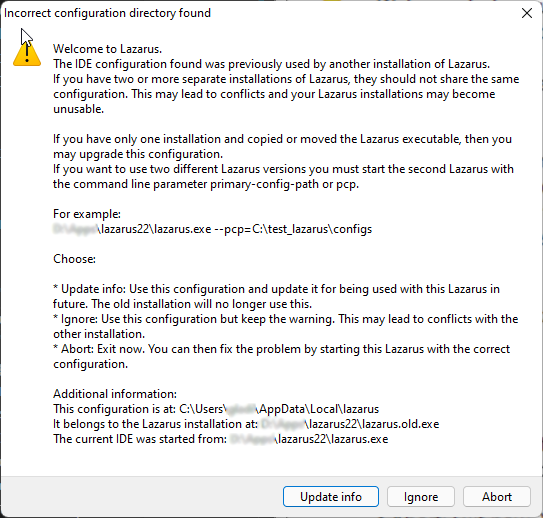

A instalação de pacotes ou "addons" estendem as funcionalidades tanto da programação como também da IDE e isso é muito bom, contudo podem existir problemas pelo caminho. Como a IDE Lazarus foi compilada com o FreePascal, incluir novos pacotes requeirerá que nossa IDE seja recompilada. Mas e se a recompilação falhar, será que perderemos nossa IDE?
O time do Lazarus pensou nisso também e orgulhosamente eles podem responder "não" a essa pergunta. Mas precisamos estar preparados para recuperar-se dessa situação, como?
Se ao instalar um pacote ou por qualquer outro motivo nossa IDE parar de funcionar, saiba que há no diretório de instalação do Lazarus um arquivo “lazarus.exe” que corresponde ao que está em uso e um outro - backup - chamado “lazarus.exe.old”, não acredita? Então observe:
Na hipótese da IDE deixar de funcionar, simplesmente execute o programa “lazarus.old.exe” e aparecerá esta mensagem:

Então clique em Update Info(Atualizar informações) e o sistema irá retornar ao estágio anterior quando as coisas funcionavam.
Se a IDE quebrou por causa de pacotes que tentou instalar, aproveite para ir em Packages|Install and uninstall packages para identificar os pacotes recém instalados - que provavelmente foram os problemáticos - e então removê-los. Note que às vezes é possível identificá-los porque eles ficam marcados com um ícone de “+” ao lado dos nomes indicando que foi uma tentativa frustrada de instalação e eles ainda permanecem marcados para serem instalados numa próxima compilação, veja-os:
Marque os pacotes problemáticos para remoção e confirme para que a IDE seja novamente recompilada. Depois disso, não execute mais o “lazarus.old.exe” e sim o atalho atual que aponta para “lazarus.exe”.
Compilar a IDE pode soar estranho, mas quando você instala ou desinstala certos tipos de pacotes é isso o que acontece. Quanto mais pacotes você instalar, mais pesado será sua IDE, por essa razão instale pacotes com parcimônia, instale apenas os que irá usar.
Dica:Você pode ter uma segunda instalação do Lazarus noutro diretório para experimentar coisas novas e deixando sua instalação principal separada apenas para os sistemas em produção. Essa é uma boa prática.